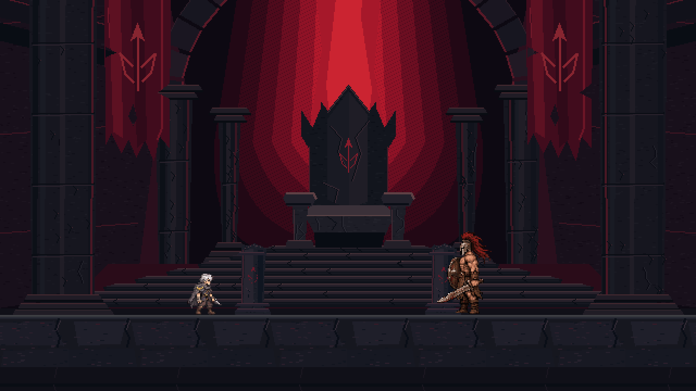
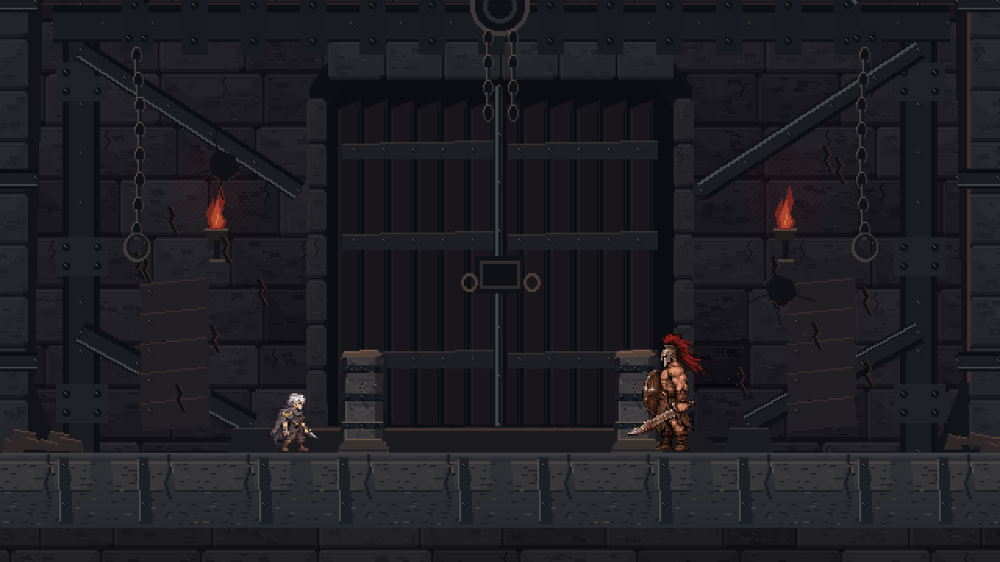

신규 픽셀아트 후보. 오프라인 합성 미리보기이며 Unity 실행 화면이 아닙니다.현재 보스룸은 교체하지 않았습니다. A를 우선 추천하되 두 후보 모두 보존합니다.
중앙 검은 왕좌·계단 제단·붉은 광휘·찢어진 전쟁 군기. 새 주력 시안.

원본 그대로 보존한 비교 후보: 철제 가새·인양 구조·보강 바닥.

기둥은 ±4 위치, 예정 목업의 높이는 기존 3월드 단위 유지 가정입니다. 4:3 실제 카메라는 단순 좌우 크롭보다 더 위아래를 보여줍니다.
이전 A / 왕좌 개편 비교 · 디자인 검토 · 기존 에셋 근사 화면과 비교 · 정상/파괴 기둥 비교 · 규격·통합 계획 · 검사 결과